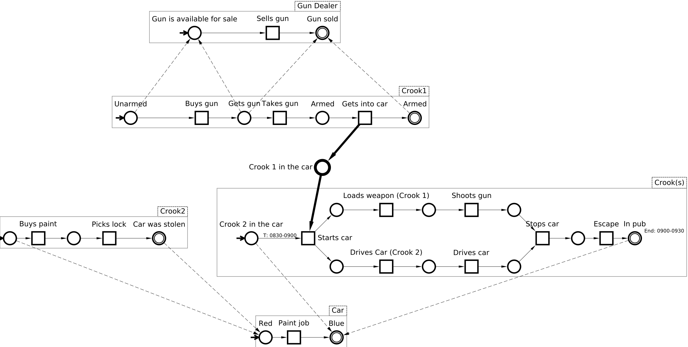
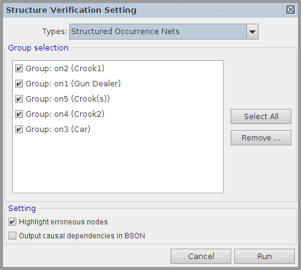
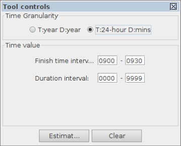
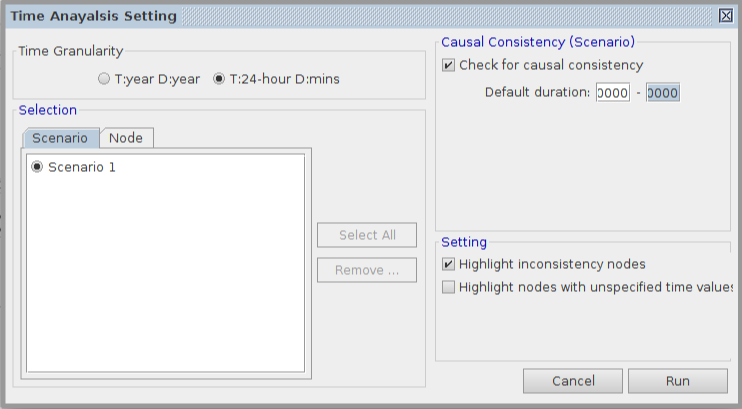
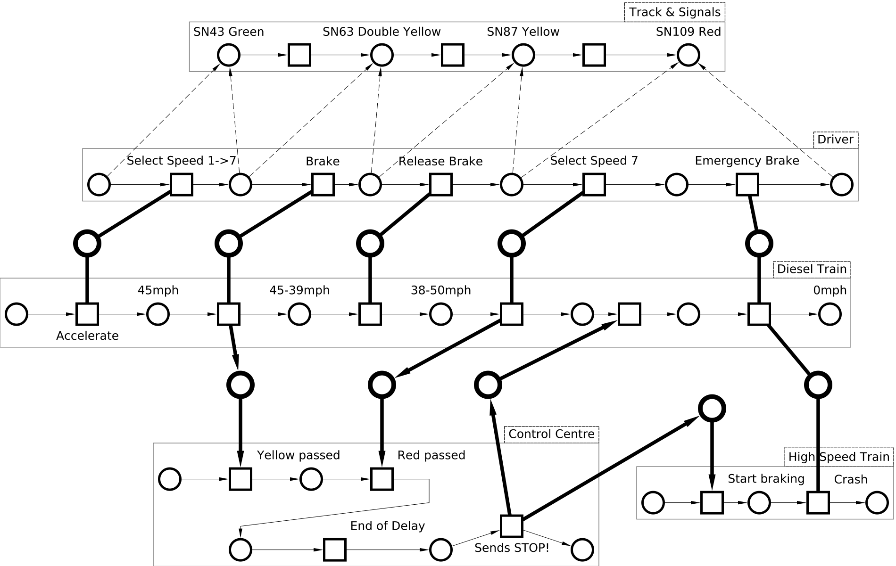

Table of Contents
Modelling with Structured Occurrence Nets: Crime and Accident Scenes
In this tutorial we show how to use Structured Occurrence Nets formalism for modelling and analysing.
Modelling and Analyzing Criminal Scenario
The first SON model portrays a shooting incident. The model consists of five occurrence nets (groups) with each represents the behaviour of a sub-scenario. For instance, the behaviours of two crooks are captured by three occurrence nets: Crook1, Crook2 and Crooks. They receptively show the sub-scenarios of an illegal gun trade, a vehicle crime perform, and the shooting incident. The asynchronous interaction between Crook1 and Crooks states the causally relationship between two scenarios. Moreover, we use behavioural relationships to capture the dependencies between Gun Dealer and Crook1 as well as Car and Crooks.

Simulation
To simulate the model, press the ![[M] Simulate](../../help/editor_tools-simulate.png "[M] Simulate") button. The initial marking will be automatically set. and all of the enabled events will be identified by being coloured orange. Clicking on any enabled event causes tokens to move, event colouring to be updated, and the simulation record augmented.
button. The initial marking will be automatically set. and all of the enabled events will be identified by being coloured orange. Clicking on any enabled event causes tokens to move, event colouring to be updated, and the simulation record augmented.
A parallel execution setting dialog will pop up when both events Gets into car and starts car are enabled. The dialog allows you to run the two events simultaneously.
Structural property and reachability checkings
To verify the correctness of structural property, select Tools→Verification→Structural property. In setting dialog, select Types as Structured Occurrence Nets to verify all types of relationships defined in SONs concept. Select all groups in the Group selection to verify the entire model.

To perform reachability checking, double click on condition/channel place or use property editor to mark some nodes. Then select Tools→Verification→Reachability.
Time property setting and analysis
SON-plugin provides facilities to represent and analyse time information. Press the ![[T] Time value setter](son-time.png "[T] Time value setter") button to enter the time mode. You can either manually or automatically set time information for a selected node or arc in the time property setter. The time interval displayed on each arc indicates the finish time interval of its source node as well as the start time interval of its destination node. Try to use the Estimate.. button to perform a time estimation for the node with unspecified time information. For example:
button to enter the time mode. You can either manually or automatically set time information for a selected node or arc in the time property setter. The time interval displayed on each arc indicates the finish time interval of its source node as well as the start time interval of its destination node. Try to use the Estimate.. button to perform a time estimation for the node with unspecified time information. For example:

- Press the button.
- Click on the arc between
Crook2 in carandstarts carinCrooksgroup, and set start time as 0830-0900. - Click on the condition
In pubin the same group, and set end time as 0900-0930. - Click on the event
Stops car, set time granularity as 24-hour/mins, press Estimate.. button. - In Estimator setting dialog, set Default duration as 0000-0010, and press Run.
To verify the time consistency, select Tools→Time analysis→Check for consistency... Set time granularity to 24-hour/mins. Select Check for causal consistency, this will allow to verify the nodes with incomplete time information using causal relations. Press Run to see the verification result.

Download this model: crime-demo.work (6.96 KiB, 20h ago)
Modelling Accident Scenario - a Real Life Case
We apply SON on the modelling of an accident scenario — Ladbroke grove rail crash.

Ladbroke Grove, London, was the scene of a serious railway accident in October 1999. An outbound three car diesel train collided with an eight coach high speed train at a combined speed of 130 mph, with 31 people being killed and more than 500 injured. The immediate cause of the disaster is due to the diesel train passed signal SN109 at red for danger (also known as SPAD — Signal Passed At Danger).
The SON model consists of five parties which have been divided and represented by separate occurrence nets:
- Track and Signals represents the behaviours of the signals that diesel train passed by in sequence. The first signal SN43 is showing a green aspect (proceed), the next two signals SN63 and SN87 are both showing yellow aspects indicating a “preliminary caution”. The last one SN109 is showing a red aspect meaning stop.
- Driver shows the behaviours of the driver in diesel train which include the movement of train speed control with seven speed notches 1-7 and the action of emergency brake.
- Diesel Train models speed behaviours of diesel train which are affected by the driver.
- Control Centre is the behaviours of the signaller who is in charge of monitoring the situation.
- High Speed Train models the behaviours of high speed train which is collided with diesel train.
Download this model: ladbroke-demo.work (9.42 KiB, 20h ago)